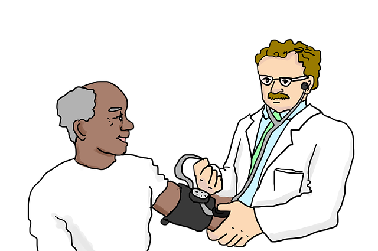

A lifestyle consisting of physical activity is highly suggested to prevent diabetes by putting the body to work and decrease the prevalence of white adipose tissue (Usually the makeup of obesity). Activities such as jogging, dancing, any kind of sport and even walking are recommended to promote cardiovascular fitness and support brain health.
A diet rich in vegetables, fruits, lean proteins, whole grains, and healthy fats is optimal when well balanced to support a healthy diet. A well-balanced diet provides essential nutrients for both physical and cognitive well-being that decrease the likelihood of getting Alzheimer's Disease.
Chronic stress will negatively impact a persons cognitive health by imbalancing the neural circuitry subserving cognition. To effectively reduce stress, it is important a person practises stress-reducing techniques such as yoga, meditation, and deep breathing. it is also important a person seeks help if they notice the stress is taking a toll on their lifestyle and mental health. Relaxed environments will contributes to overall well-being through a calm mind.
It is highly important people regularly schedule health check-ups to monitor their mental and physical health. The worst help, is no help. Surrounding ourselves with factors that can help diminish our chances of Alzheimer's is crucial. Detecting and addressing health issues early can contribute to better overall well-being.
